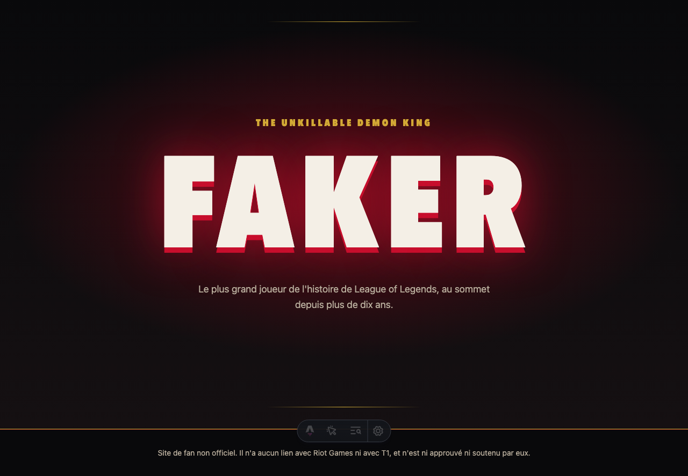
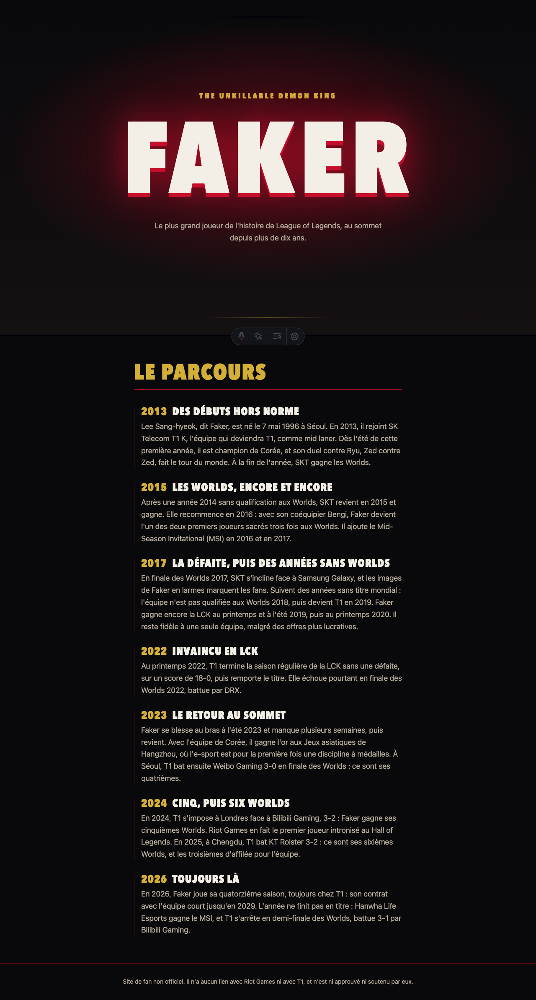
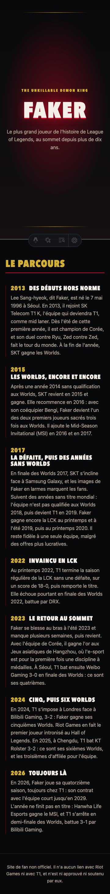

Le Parcours
La page s'arrêtait sur le nom de Faker : le visiteur n'apprenait rien de son histoire. Il lit maintenant son Parcours de 2013 à 2026, en sept étapes et en deux minutes environ.
Décision attendue
Relisez les sept étapes du Parcours : je les ai rédigées moi-même, à partir de faits publics. Puis mergez la pull request pour les mettre en ligne.
Risque
Faible
Avant / après
Ordinateur


Téléphone (360 px)

Ce qui change
- La Section « Le Parcours » s'affiche juste après l'En-tête
- Sept étapes datées, de ses débuts en 2013 à la saison 2026
- Les faits de 2026 (MSI, Worlds, contrat) ont été vérifiés le 14 novembre 2026
- Le texte se corrige dans un seul fichier, sans toucher au reste
- Une faute dans ce fichier bloque la mise en ligne, au lieu de publier une étape en moins
Fiabilité
Tests22 tests passent, dont 16 nouveaux sur le Parcours
ChecksPassés sur cette version (ab2f956)
Critères5 sur 5 prouvés (voir l'annexe)
Tests existantsAucun supprimé ni modifié
RelectureDeux tours de relecture indépendante : formulations inexactes et étape qui pouvait disparaître, corrigées. Deux avis mineurs restent.
RisqueUne Section ajoutée : rien d'existant ne change. Une faute dans le texte bloque la publication. Annuler la pull request suffit.
Choix effectués
Le texte vit dans un seul fichier, une étape par paragraphe, comme une fiche à remplir. L'outil de lecture fourni par Astro (l'outil qui fabrique le site) a été écarté : sur une faute de frappe, il sautait l'étape sans prévenir, et le site partait en ligne incomplet. Un petit lecteur maison refuse au contraire toute erreur et arrête la fabrication. La contrepartie : pendant que vous modifiez le texte en local, il faut peut-être relancer l'aperçu pour voir la correction. Le site en ligne n'est pas concerné.
Pour l'essayer
Lancez « npm run dev » et ouvrez l'adresse affichée. Sous le nom de Faker, le Parcours montre sept étapes. À largeur de téléphone, rien ne dépasse.
Annexe
Les critères du ticket
Pour chaque critère d'acceptation, le test ou la capture qui le prouve.
| État | Critère |
|---|---|
| Prouvé | La Section Parcours apparaît après l'En-tête, avec son propre titre. Test : la Section vient juste après l'En-tête, avec son titre « Le Parcours » |
| Prouvé | Le texte est rangé dans une collection de contenu validée par un schéma : une donnée invalide fait échouer le build. Tests : le schéma refuse un titre vide ou une année invalide, la lecture refuse une étape en double. Une année 1999 arrête le build. |
| Prouvé | Le texte est en français, court (lisible en quelques minutes) et couvre la période de 2013 à aujourd'hui. Les faits récents ont été vérifiés. Test : 300 à 650 mots, de 2013 à 2026. Faits de 2026 vérifiés par recherche le 14 novembre 2026, faits anciens relus deux fois. |
| Prouvé | La Section est lisible sur téléphone (360 px) comme sur ordinateur. Captures : apres-page-telephone.png (360 px) et apres-page-ordinateur.png |
| Prouvé | Un test sur la page rendue vérifie que le Parcours est présent, avec son titre, et placé après l'En-tête. Test : « la Section Parcours est la première Section de <main>, après l'En-tête, avec son titre <h2> » |
Les fichiers touchés
16 fichiers : 9 créés, 7 modifiés.
| Statut | Fichier | Lignes |
|---|---|---|
| Créé | src/components/Parcours.astro Affiche la Section Parcours, étapes rangées par année | +72 −0 |
| Créé | src/content.config.ts | +10 −0 |
| Créé | src/content/parcours.yaml Le texte du Parcours, une étape par entrée : c'est le fichier à modifier pour corriger le texte | +54 −0 |
| Créé | src/data/charger-parcours.ts Lit le fichier du Parcours et refuse toute erreur | +25 −0 |
| Créé | src/data/parcours-schema.ts Dit ce qu'une étape doit contenir : année, titre, texte | +15 −0 |
| Créé | tests/charger-parcours.test.ts | +34 −0 |
| Créé | tests/global-setup.ts Prépare le contenu avant les tests | +9 −0 |
| Créé | tests/parcours-schema.test.ts | +26 −0 |
| Créé | tests/parcours.test.ts | +46 −0 |
| Modifié | astro.config.mjs | +5 −1 |
| Modifié | package-lock.json | +2 −1 |
| Modifié | package.json | +2 −1 |
| Modifié | src/data/site.ts | +7 −1 |
| Modifié | src/pages/index.astro | +4 −1 |
| Modifié | src/styles/global.css | +3 −0 |
| Modifié | vitest.config.ts | +1 −0 |